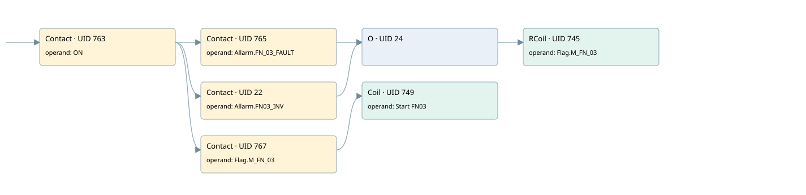

fn03
motors 1 · 검색 색인 순서 25 · 원본 내부 NID 추정 25
백업 PLF 원본의 2801064 바이트 위치에서 복원한 XML. 검색 문서 1954의 객체 키 16102200ac11000000000000와 연결했다. 이름 해석 6/6개. 남은 RefId는 상수 또는 미해석 참조다.
연결 구조 다시 그리기
원본 Part/PCon/Wire를 이용한 연결도다. TIA 화면의 래더 배치 또는 실행 결과를 재현한 그림은 아니다. 핀 연결은 아래 표와 원본 XML을 기준으로 읽는다. 노드 위에 마우스를 두면 피연산자 이름을 볼 수 있다.

접점·코일·블록과 피연산자
| Part UID | Gate | Negated 핀 | 연결 피연산자 |
|---|---|---|---|
| 763 | Contact | operand = ON | |
| 765 | Contact | operand = Allarm.FN_03_FAULT | |
| 22 | Contact | operand = Allarm.FN03_INV | |
| 24 | O | ||
| 745 | RCoil | operand = Flag.M_FN_03 | |
| 767 | Contact | operand = Flag.M_FN_03 | |
| 749 | Coil | operand = Start FN03 |
접점 경로를 펼친 조건식
Contact·O/A·비교기의 원본 연결을 읽기 쉽게 펼친 보조 해석이다. POWER는 전원 레일 시작을 뜻한다. 호출 블록·에지·타이머의 내부 동작과 다중 쓰기 순서는 이 표로 실행 검증하지 않았다. 미해석 핀과 RefId는 원문 연결표에서 확인한다.
| UID | 동작 | 대상 | 원본 접점 경로 | 내용 |
|---|---|---|---|---|
| 745 | RCoil | Flag.M_FN_03 | ((ON AND Allarm.FN_03_FAULT) OR (ON AND Allarm.FN03_INV)) | 조건 성립 시 Reset |
| 749 | Coil | Start FN03 | (ON AND Flag.M_FN_03) | 조건에 따른 Coil 기록 |
원본 배선 연결
| Wire UID | 동일 Wire 연결 끝점 |
|---|---|
| 769 | Powerrail {} ↔ Part 763.in |
| 755 | ORef 750 (ON) ↔ Part 763.operand |
| 764 | Part 763.out ↔ Part 765.in ↔ Part 22.in ↔ Part 767.in |
| 756 | ORef 751 (Allarm.FN_03_FAULT) ↔ Part 765.operand |
| 766 | Part 765.out ↔ Part 24.in1 |
| 21 | ORef 23 (Allarm.FN03_INV) ↔ Part 22.operand |
| 25 | Part 22.out ↔ Part 24.in2 |
| 26 | Part 24.out ↔ Part 745.in |
| 758 | ORef 752 (Flag.M_FN_03) ↔ Part 745.operand |
| 759 | ORef 753 (Flag.M_FN_03) ↔ Part 767.operand |
| 768 | Part 767.out ↔ Part 749.in |
| 761 | ORef 754 (Start FN03) ↔ Part 749.operand |
식별자 해석 근거 6개
| ORef UID | RefId | 이름 | IdentXmlPart 파일 | 해석 방법 |
|---|---|---|---|---|
| 750 | 1 | ON | 0602-IdentXmlPart.xml | UID/RID + search-text + NID agreement |
| 751 | 128 | Allarm.FN_03_FAULT | 0604-IdentXmlPart.xml | UID/RID + search-text + NID agreement |
| 23 | 213 | Allarm.FN03_INV | 0604-IdentXmlPart.xml | UID/RID + search-text + NID agreement |
| 752 | 129 | Flag.M_FN_03 | 0604-IdentXmlPart.xml | UID/RID + search-text + NID agreement |
| 753 | 129 | Flag.M_FN_03 | 0604-IdentXmlPart.xml | UID/RID + search-text + NID agreement |
| 754 | 130 | Start FN03 | 0602-IdentXmlPart.xml | UID/RID + search-text + NID agreement |
검색 코드 보조 자료
참조 명칭을 찾기 위한 자료이며 실행 순서나 AND/OR 관계는 위 연결표로 확인한다.
"on" "allarm".fn_03_fault "flag".m_fn_03 "allarm".fn03_inv "flag".m_fn_03 "start fn03"